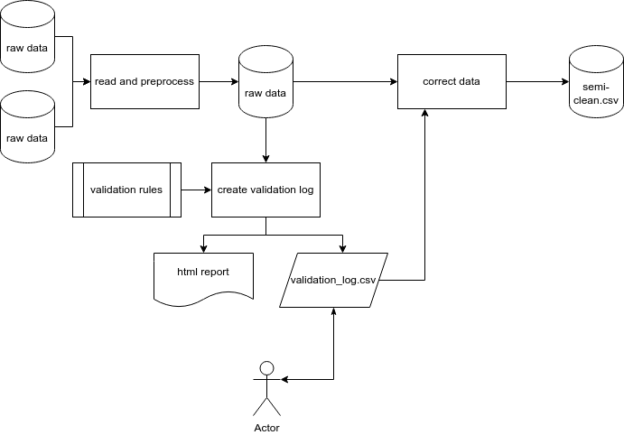
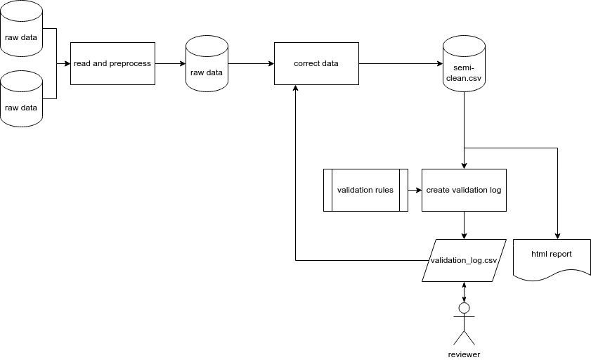

Mechanics: Data Cleaning and Validation Pipeline
mechanics.RmdThis is a basic overview of the data cleaning and validation pipeline supported by {ohcleandat} functions. The pipeline is a data analytics workflow implemented in R, using the {targets} package.
In a simple case, this has four steps:
- Reading in the data.
- Setting up rules to validate the data.
- The creation and use of a validation log.
- Integrating the corrections of that log to clean the data.
Data Cleaning and Validation Pipeline
Reading raw data
The raw data for this pipeline can be from a variety of sources. The first step is to read in this data, standardize it using some pre-processing steps and if required, combine it into one unified data set for review.
Validation Rules
Data validation rules are formally defined using the {validate} R package. These rules might involve ensuring the data is within a certain range, ensuring values are from a given input list or checking to see if values are unique or missing.
Validation Log
Once these rules have been defined, they are ‘confronted’ with the data. Those records that do not pass the validation checks are exported in a validation log. A validation log is a CSV output that can be sent to subject-matter experts for manual review. During the review process, the reviewer will indicate if an entry is valid or not, and if not, they will provide a ‘new value’ to be corrected as well as any optional comments.
Integrating corrections
The final step involves correcting the data and converting it into a ‘semi-clean’ data set. This involves reading in the validation log, scanning for any changes that are indicated, and then correcting the existing values with the newly supplied values.
To ensure corrections are applied as expected, a function
validation_checks() is provided to compare the before and
after data, along with the validation logs. This function will error if
the checks are not satisfied and the output when successful is the
summary output from arsenal::comparedf().
A conceptual overview of this process is outlined below.

Targets Implementation
Pipeline
The below code sample demonstrates a typical end to end validation pipeline. While the data pre-processing steps for any given project may vary, much of this code can be re-used as a template for future pipelines.
fs_mosquito_field_targets <- tar_plan(
# FS mosquito field data googlesheets ids
targets::tar_target(
fs_mosquito_field_sheets,
c(
fs_mosquito_21_24 = "1I45IcVtYi7hOc-qum7d",
fs_mosquito_19_20 = "17hYyE_Rs4Z9IU-vpKTj",
fs_mosquito_20_21 = "1qn_N0WVTKpwv0iKzOEm",
fs_mosquito_16_17 = "1XAItM-YST8ZdUCU1gPH",
fs_mosquito_17_18 = "1GUYgEX-VA0NH2_Yko-M",
fs_mosquito_18_19 = "1HJv9-DOQ3sOgy3wVHoz"
)
),
# FS mosquito field data 2021-2024
targets::tar_target(
fs_mosquito_field_raw,
ohcleandat::read_googlesheets(
key_path = here::here("./key.json"),
ss = fs_mosquito_field_sheets,
sheet = "all"
),
pattern = map(fs_mosquito_field_sheets),
iteration = "list",
cue = tar_cue("never")
),
# setting intuitive names for the dynamic branches of each year
tar_target(
fs_mosquito_field_raw_n,
set_names(fs_mosquito_field_raw, names(fs_mosquito_field_sheets))
),
# clean data
targets::tar_target(
fs_mosquito_21_24,
map_dfr(
fs_mosquito_field_raw_n$fs_mosquito_21_24[1:5],
clean_fs_mosquito_21_24
)
),
targets::tar_target(
fs_mosquito_19_20,
map_dfr(
fs_mosquito_field_raw_n$fs_mosquito_19_20[1:5],
clean_fs_mosquito_19_20
)
),
targets::tar_target(
fs_mosquito_20_21,
map_dfr(
fs_mosquito_field_raw_n$fs_mosquito_20_21[-5],
clean_fs_mosquito_20_21
)
),
targets::tar_target(
fs_mosquito_16_17,
map_dfr(
fs_mosquito_field_raw_n$fs_mosquito_16_17[-c(3, 24, 25)],
clean_fs_mosquito_16_17
)
),
targets::tar_target(
fs_mosquito_17_18,
map_dfr(
fs_mosquito_field_raw_n$fs_mosquito_17_18,
clean_fs_mosquito_17_18
)
),
targets::tar_target(
fs_mosquito_18_19,
map_dfr(
fs_mosquito_field_raw_n$fs_mosquito_18_19[1:23],
clean_fs_mosquito_18_19
)
),
# combine all years
targets::tar_target(
fs_mosquito_data_comb,
bind_rows(
fs_mosquito_21_24 = fs_mosquito_21_24,
fs_mosquito_19_20 = fs_mosquito_19_20,
fs_mosquito_20_21 = fs_mosquito_20_21,
fs_mosquito_16_17 = fs_mosquito_16_17,
fs_mosquito_17_18 = fs_mosquito_17_18,
fs_mosquito_18_19 = fs_mosquito_18_19,
.id = "dataset"
)
),
# post processing
targets::tar_target(
fs_mosquito_data,
combine_fs_mosquito_field(fs_mosquito_data_comb)
),
# read in existing validation log if exists
targets::tar_target(
fs_mosquito_field_existing_log,
ohcleandat::get_dropbox_val_logs(
file_name = "log_fs_mosquito_field.csv",
path_name = "dropbox/validation_logs",
folder = NULL
),
cue = targets::tar_cue("always")
),
# clean the data using the existing validation log
targets::tar_target(
fs_mosquito_field_semiclean,
ohcleandat::correct_data(
validation_log = fs_mosquito_field_existing_log,
data = fs_mosquito_data,
primary_key = "key"
)
),
# # validation cleaning checks
targets::tar_target(
fs_mosquito_field_cleaning_checks,
ohcleandat::validation_checks(
validation_log = fs_mosquito_field_existing_log,
before_data = fs_mosquito_data,
after_data = fs_mosquito_field_semiclean
)
),
# upload semiclean data
targets::tar_target(
upload_fs_mosquito_field_semiclean,
ohcleandat::dropbox_upload(
fs_mosquito_field_semiclean,
file_path = here::here("outputs/semiclean_fs_mosquito_field.csv"),
dropbox_path = "dropbox/semi_clean_data"
),
cue = targets::tar_cue("always")
),
# Initializing rules which are defined as a function
targets::tar_target(rules_fs_mosquito_field, create_rules_fs_mosquito_field()),
# mapping through rules to create a validation log
targets::tar_target(
log_fs_mosquito_field,
map_df(
rules_fs_mosquito_field[-c(13, 14)],
~ ohcleandat::create_validation_log(
data = fs_mosquito_field_semiclean,
rule_set = .x,
pkey = "key"
)
)
),
# Combine new validation violations with existing log
targets::tar_target(
log_fs_mosquito_field_combined,
ohcleandat::combine_logs(existing_log = fs_mosquito_field_existing_log, new_log = log_fs_mosquito_field)
),
# uploading to dropbox
targets::tar_target(
upload_log_fs_mosquito_field_dropbox,
ohcleandat::dropbox_upload(
log = log_fs_mosquito_field_combined,
file_path = here::here("outputs/log_fs_mosquito_field.csv"),
dropbox_path = "dropbpx/validation_logs"
),
cue = targets::tar_cue("always")
),
# Rendering a HTML report for archival and emailing
tarchetypes::tar_render(
report_fs_mosquito_field,
path = here::here("reports/RVF2_FS_Mosquito_Field.Rmd"),
output_dir = "outputs",
knit_root_dir = here::here()
),
# target to identify report path
targets::tar_target(
html_files_fs_mosquito_field,
containerTemplateUtils::get_file_paths(report_fs_mosquito_field, pattern = "\\.html$")
),
# Upload and archive report to AWS S3
targets::tar_target(
deploy_automations_report_fs_mosquito_field,
containerTemplateUtils::aws_s3_upload(
path = html_files_fs_mosquito_field,
prefix = sprintf("%s%s/", git_prefix, Sys.Date()),
bucket = Sys.getenv("AWS_BUCKET"),
error = TRUE,
file_type = "html"
),
cue = targets::tar_cue("always")
),
# Create a custom URL for hyperlink
targets::tar_target(
url_fs_mosquito_field,
ohcleandat::make_report_urls(deploy_automations_report_fs_mosquito_field)
),
# Blast out email
targets::tar_target(
name = email_updates_fs_mosquito_field,
command =
containerTemplateUtils::send_email_update_tar(
to = strsplit(Sys.getenv("EMAIL_RECIPIENTS_TEST"), ";")[[1]],
from = Sys.getenv("EMAIL_SENDER"),
project_name = "RVF1 & RVF2 FS Mosquito Field data",
attach = TRUE,
attachment_paths = html_files_fs_mosquito_field,
use_hyperlinks = TRUE,
hyperlinks_text = "Archived Report",
hyperlinks_url = url_fs_mosquito_field,
test = TRUE
),
cue = targets::tar_cue("always")
)
)
Revised pipeline
In actual fact, after reading through the targets pipeline, a refinement is required to our flow chart to reflect how the pipeline works beyond its initial creation.
To ensure validation log corrections are applied correctly, any existing validation log is read in first. The raw data are then corrected and the validation log is re-run on the ‘semi-clean’ data so as to only flag new violations that were not already reviewed and corrected. Any new violation are appended to the existing log and uploaded to Dropbox.

Complex Cases
In some cases, such as with questionnaire data, multiple different logs are created and combined together - increasing the complexity.
Below is an example of combining multiple log types together:
# mapping through rules to create a validation log
targets::tar_target(
log_animal_owner,
map_df(
rules_animal_owner,
~ ohcleandat::create_questionnaire_log(
data = animal_owner_semiclean,
form_schema = animal_owner_schema,
rule_set = .x,
url = "https://odk.xyz.io/#/projects/5/forms/survey/submissions",
pkey = "id"
)
)
),
# create validation log records for free text requiring translation
targets::tar_target(
animal_owner_translation_log,
ohcleandat::create_translation_log(
response_data = animal_owner_semiclean,
form_schema = animal_owner_schema,
url = "https://odk.xyz.io/#/projects/5/forms/survey/submissions",
)
),
# create validation log records for free text 'other' responses that may contain valid multi-options
targets::tar_target(
animal_owner_text_log,
ohcleandat::create_freetext_log(
response_data = animal_owner_semiclean,
form_schema = animal_owner_schema,
url = "https://odk.xyz.io/#/projects/5/forms/survey/submissions",
,
questionnaire = "animal_owner"
)
),
# unite current-run logs
targets::tar_target(
logs_all_animal_owner,
bind_rows(
log_animal_owner,
animal_owner_translation_log,
animal_owner_text_log
)
),
# Combine new validation violations with existing log
targets::tar_target(
log_animal_owner_combined,
ohcleandat::combine_logs(existing_log = animal_owner_existing_log, new_log = logs_all_animal_owner)
)More info
For more info on using {targets} see here: https://ecohealthalliance.github.io/eha-ma-handbook/3-projects.html#targets